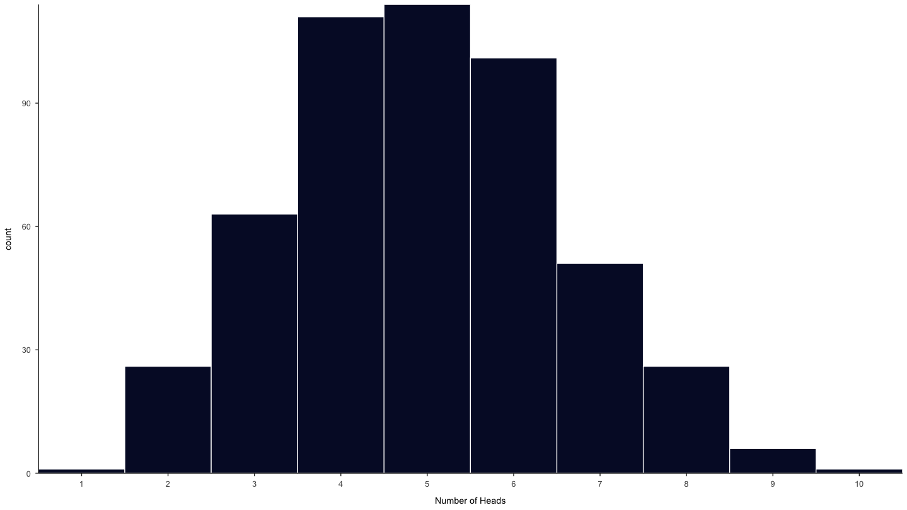
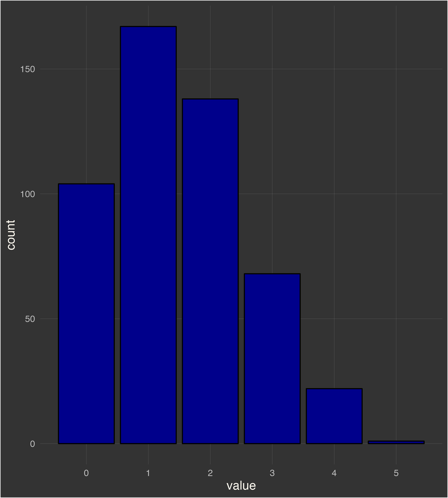
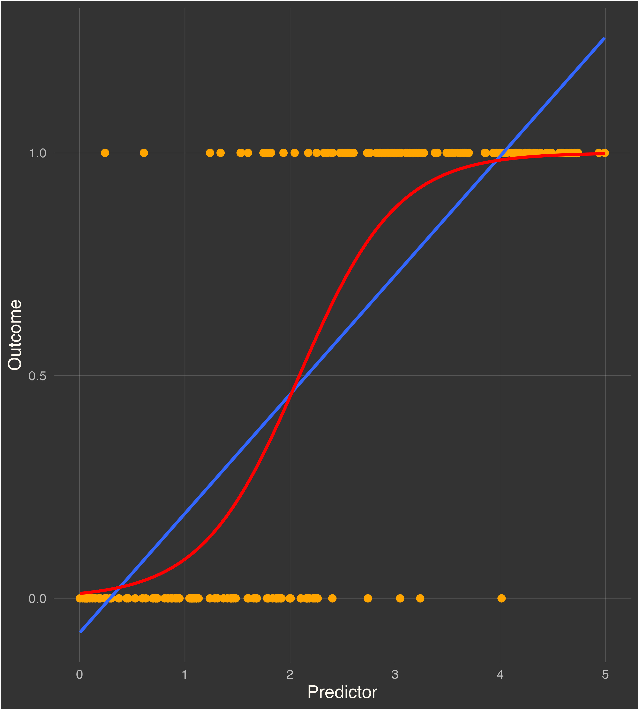

Generalized Linear Models
There are a lot of common statistical methods, you are already familar with - Regression, Anova, and maybe even Ancova. Regression allows researchers to determine if and how
variables are related. ANOVA allows researchers to determine if the mean scores
of different groups or conditions differ. Analysis of covariance (ANCOVA), a
combination of regression and ANOVA, allows researchers to determine if the
group or condition mean scores differ after the influence of another variable
(or variables) on these scores has been equated across groups.
Soon you'll notice that the matrix equations for all these models share a certain pattern, a pattern that is expected from all modelling strategies that fall within the purview of GLM (generalized linear models).
Tukey, in 1977 came up with the GLM conception when he described data as the following -
\[Data = Model + Residual\]
If you believe you've already seen similar equations, you are correct. The model is a representation of our understanding or hypotheses
about the data, while the error explicitly acknowledges that there are other
influences on the data. When a full model is specified, the error is assumed to
reflect all influences on the dependent variable scores not controlled in the
experiment.
Breaking it down further
The G in GLM represents the term "general" in GLM and simply refers to the ability to accommodate distinctions
on quantitative variables representing continuous measures (as in regression
analysis) and categorical distinctions representing groups or experimental conditions
(as in ANOVA).
The L is honestly simply there to attempt to confuse you a little because it stands for linearity. The term "linear" in GLM often is misunderstood to mean that the
relation between any data and any predictor variable must be described by a straight
line. Although GLMs can describe straight-line relationships, they are capable of
much more. Through the use of transformations and polynomials, GLMs can describe
many complex curvilinear relations between the data and the predictor variables.
The M simply stands for modelling, while there is not much insight gained from expanding on the modelling term. It is important to know that GLM can be succintly described as
a family of modelling approaches that follow distinct probability distributions. For example, the residuals for the Linear regression model follow a different distribution to the residuals of logistic regression or poisson regression.
Simple Extensions of the GLM
GLMs provide a framework for modeling various types of data, including continuous, binary, count, and categorical data, by allowing for different link functions (Type of relationship) and error distributions. The choice of link function and error distribution in GLMs allows for flexibility in modeling a wide range of data types and relationships.
ANOVA
ANOVA is another special case of GLM that is used to analyze the differences in means among two or more groups or treatments.
- Dependent Variable = Numeric
- Predictors = Categorical
ANOVA focuses on categorical independent variables, often referred to as factors, and assesses whether there are statistically significant differences in the means of the dependent variable across these groups.
In the context of GLM, ANOVA can be seen as a specialized model where the link function is the identity function (Used for continuous data, where the linear combination is directly related to the mean of the response variable (e.g., linear regression)), and the error distribution is assumed to be normal.
Linear Regression
Linear regression is a special case of GLM where the dependent variable (response) is continuous, and the goal is to model the relationship between the response and one or more predictor variables.
- Dependent Variable = Numeric
- Predictors = Categorical or Numeric
In linear regression, the model assumes that the conditional mean of the response variable is a linear combination of the predictor variables.
The linear regression model is a special case of GLM where the link function is also the identity function, and the error distribution is assumed to be normal (Gaussian).
\[Y = \beta_{0} + X_{i}\beta_{1} + \epsilon \]
Here, the Y variable is the outcome variable, X is the predictor ,\(\beta_{0}\) is the intercept, \(\beta_{1}\) is the slope, and \(\epsilon\) is the error.


Note: you can always fit an ANOVA model within the linear model framework if you input a categorical variable.
Non-Linear extensions of GLM
So far, we've looked at the simplest extensions for GLM where the link function is an identity function and the error distribution is normal. So let's talk about what these link functions are all about?
A link function is a mathematical function that relates the expected value of the response variable (the mean) to the linear combination of predictors (also known as the linear predictor). For example, in linear models the typical link function is \(X\beta\).
GLMs extend this idea by allowing for a broader range of data types, such as binary (yes/no) data or count data, which typically do not have a linear relationship. Hence, we start with a linear combination of predictors, but we use a link function to model the relationship between this linear combination and the expected value of the response.
Binomial Distribution
The binomial distribution is commonly used to model the number of successes (often denoted as "k") in a fixed number of independent Bernoulli trials, where each trial has two possible outcomes: success or failure. Simply put, we flip a coin and try to model the probability of a heads or we might try to model the probability that an individual will recover when given a certain dose of medicine.

The above graph examines the binomial distribution of obtaining a head in 10 tosses (500 replications). This binomial distribution actually resembles a normal distribution when the probability of obtaining a success is similar to the probability of a failure. The below graph examines the same distribution but the probability of a heads is now 0.15. Hence why, you can see a strong positive skew.

It is clear that the binomial distribution does not follow a normal distribution unless the probability of success is equal to the probability of failure.
So, what link function would we end up using if the outcome variable is based off a dichotmous variable?
The answer is a little tricker than one would assume, let's take a look at the relationship between a dichotomous outcome variable and a continous predictor. We use a logistic regression model to predict a dichotmous outcome variable based off a continous variable. For example, the probability of not having cancer given the amount of stress can be written as -
\[Pr(Cancer = No|Stress)\]
Here, the probability of not having cancer is the outcome variable, while the amount of stress is the predictor variable.
A linear model would attempt the following -
\[p(X) = \beta_{0} + \beta_{1}X\]
The problem is that any time a straight line is fit to a binary response that is coded as
0 or 1, in principle we can always predict p(X) < 0 for some values of X and p(X) > 1 for others. In the plot below, the red line is a linear model fit to a dichotomus outcome variable whereas, the blue line is a logistic function. So, the next question is what is a logistic function?

Previously we chose to model our probabilities using a linear representation, but since we want to bound our probabilities within 0 and 1, we can use a logistic function instead -
\[p(X) = \frac{e^{\beta_{0} + \beta_{1}X}}{1 + e^{\beta_{0} + \beta_{1}X}}\]
With a bit of shifting here and there, we end up with =
\[\frac{p(X)}{1+p(X)} = e^{\beta_{0} + \beta_{1}X}\]
The left hand side of the equation depicts the odds. If we take the log of both sides, we end up with a simplistic equation that suggests that the log of odds, has a linear relationship.
\[log(\frac{p(X)}{1+p(X)}) = \beta_{0} + \beta_{1}X\]
Hence why our link function for a logistic model is the log of odds. Now since the ideas, are a little more solidified, we will breeze through the other link functions in a jiffy.
Poisson Distribution
The Poisson distribution is commonly used to model count data, such as the number of events occurring in a fixed interval of time or space. For example, the number of car accidents in a day or the number of customers visiting a store in a day.
Since the Poisson distribution is discrete, it is not appropriate to use a linear model to model count data. Instead, we can use a Poisson regression model, which uses a log link function and assumes that the response variable follows a Poisson distribution.
\[log(\mu) = \beta_{0} + \beta_{1}X\]
Here, \(\mu\) is the mean of the response variable, and X is the predictor variable.
Gamma Distribution
The gamma distribution is commonly used to model continuous, positive-valued data that is skewed to the right. For example, the amount of time until a customer makes a purchase or the amount of time until a machine breaks down.
Gamma regression is used for modeling positively skewed continuous data where the response variable follows a gamma distribution. The inverse link function ensures that the predicted values are positive.
\[\frac{1}{\mu} = \beta_{0} + \beta_{1}X\]